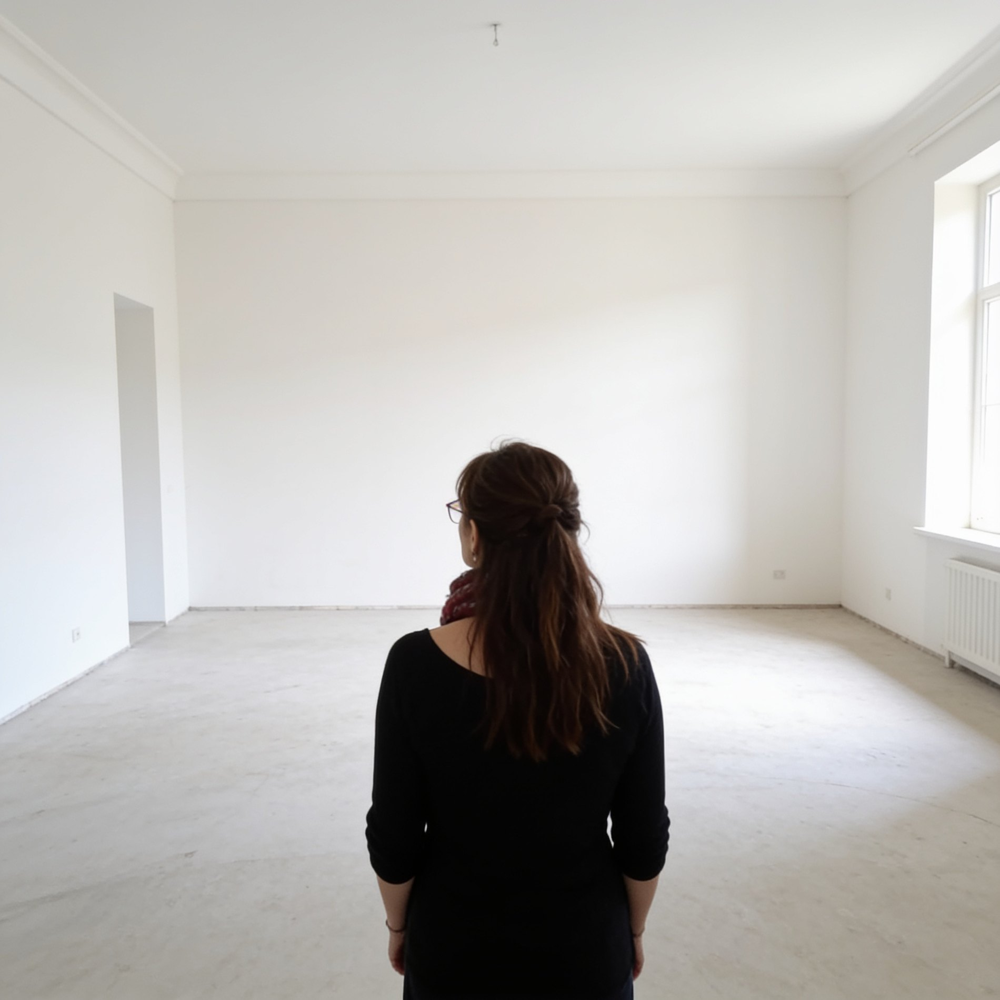
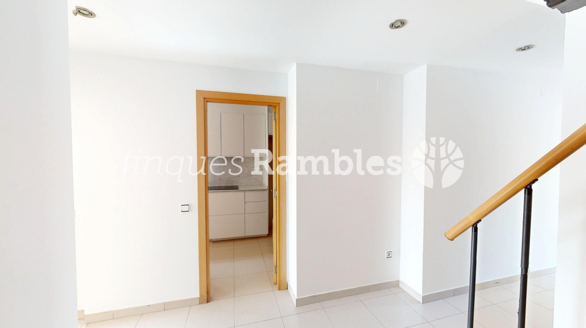
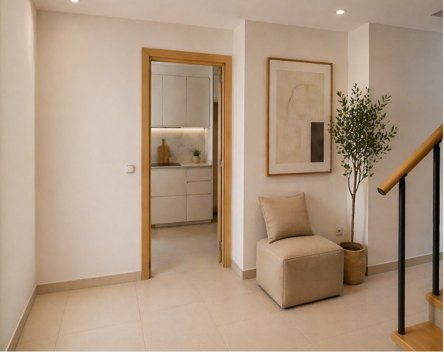
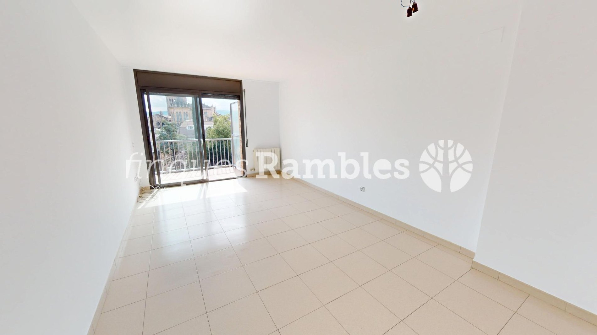
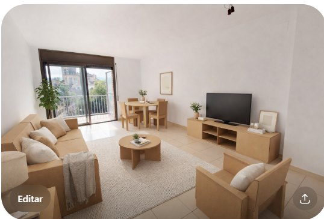
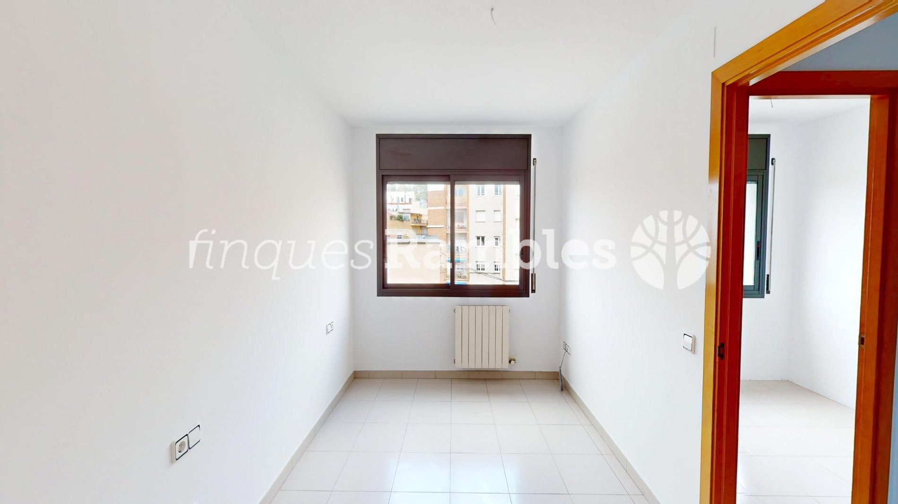
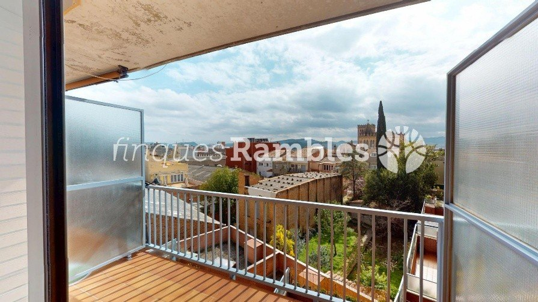
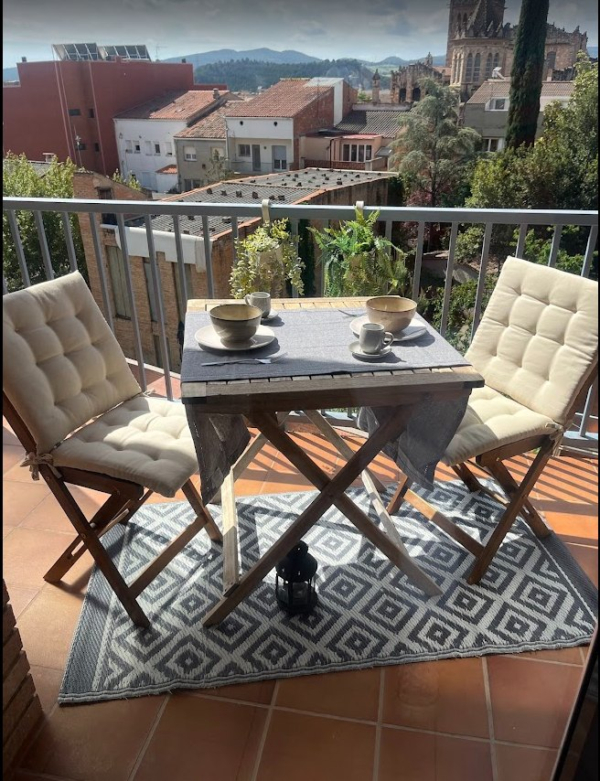

Potencial · Descubrir
Identificar aquello que hace única cada vivienda.
Visual Selling Inmobiliario
Visual Selling Inmobiliario para transformar la forma en que una vivienda es percibida, generar conexión emocional desde el primer impacto y aumentar su valor comercial.
El comprador decide emocionalmente en pocos segundos.

El punto de partida
No todas las viviendas muestran, a primera vista, todo lo que realmente pueden ofrecer.
En muchas ocasiones, inmuebles con excelentes cualidades pasan desapercibidos porque su presentación no consigue transmitir aquello que los hace únicos.
Cuando una vivienda comunica mejor, no solo se ve diferente. También se siente diferente.
La solución
El Visual Selling Inmobiliario es una estrategia que revela el verdadero potencial de una vivienda y lo convierte en una experiencia visual capaz de generar interés, emoción y deseo desde el primer impacto.
Se trata de construir una percepción.
Método
Observar. Interpretar. Revelar. Una metodología basada en cuatro pilares que guían cada proyecto.
Identificar aquello que hace única cada vivienda.
Mostrar el inmueble desde la mirada del comprador.
Crear una experiencia que permita imaginar una vida en ese espacio.
Hacer visible aquello que el inmueble realmente ofrece.
Servicios
Acompaño a propietarios, agencias inmobiliarias e inversores en la preparación visual y comercial de viviendas que necesitan destacar mejor en el mercado.
Analizo el inmueble desde la mirada del comprador para detectar oportunidades de mejora y definir las acciones con mayor impacto.
Construyo una narrativa visual clara para que la vivienda comunique mejor sus fortalezas desde el primer clic.
Intervengo el espacio de forma táctica, equilibrada y coherente para mejorar su atractivo sin perder su esencia.
Oriento la presentación, la fotografía y el relato comercial para que la vivienda destaque en portales, visitas y materiales promocionales.
Colaboro con agencias que desean ofrecer a sus clientes un servicio más estratégico, visual y diferencial.
Resultados
Cada vivienda posee un potencial que no siempre resulta evidente a primera vista. Mi trabajo consiste en descubrirlo, ordenarlo y hacerlo visible para que el comprador pueda imaginar una nueva vida en ese espacio desde el primer instante.
Entrada
Una bienvenida bien construida predispone al visitante a mirar el resto de la vivienda con otros ojos.


Salón
Cuando el espacio se comprende, el comprador deja de ver metros cuadrados y empieza a imaginar cómo vivirlos.


Dormitorio principal
La serenidad, la luz y el equilibrio convierten una estancia en un lugar donde es fácil imaginar una nueva etapa.

Balcón
Los espacios exteriores no se venden por sus dimensiones, sino por las experiencias que permiten imaginar.


El verdadero cambio no está únicamente en la vivienda. Está en la forma en que empezamos a verla.
Sobre mí
Soy Marta Gericó y creo que toda vivienda posee un potencial único. Mi trabajo consiste en observar cada inmueble con una mirada estratégica y sensible para descubrir aquello que todavía no está siendo percibido.
Mi formación en Home Staging Profesional, estrategia comercial y marketing inmobiliario me permite combinar sensibilidad estética, criterio empresarial y visión comercial.
No busco transformar una vivienda en algo que no es. Busco revelar su mejor versión.
A quién ayudo
Que desean vender una vivienda mostrando su mejor versión y diferenciándose desde el primer impacto.
Que buscan ofrecer un servicio diferencial, estratégico y de mayor valor añadido.
Que comprenden que la percepción visual influye directamente en la comercialización.
Preguntas frecuentes
No exactamente. El Home Staging es una herramienta. El Visual Selling es una estrategia completa de percepción, comunicación y marketing visual.
En la mayoría de los casos no. Muchas viviendas necesitan una nueva lectura visual, no una reforma.
Sí. Son precisamente las que más pueden beneficiarse de una estrategia de Visual Selling.
Sí. Colaboro con agencias que desean diferenciarse ofreciendo un servicio de mayor valor para sus clientes.
Sí. Muchas veces el primer paso consiste únicamente en analizar el potencial del inmueble.
Contacto
Estaré encantada de ayudarte a descubrir cómo mostrar la mejor versión de tu inmueble.
Marta Gericó
Visual Selling Inmobiliario
📞 +34 650 903 680
✉️ mgerico@gmail.com